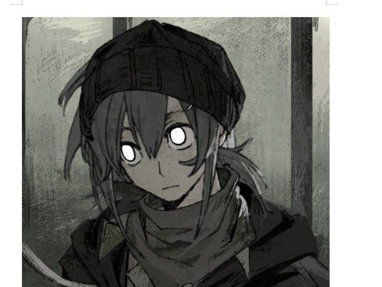

塞莱斯特·坎贝尔灵能契约型
男 · 18 岁 · 0 阶执契者 · 初始契约「影中梦」（精神与情绪影响）
执念金钱和权力是永不止的磨盘 —— 但假如我不是那磨坊里的那头毛驴呢
外貌秋冬平民的衣服，一条围巾，一件外套，里面搭上一件毛衣和一件衬衫，戴着一顶针织帽，看上去很保暖。身材高高瘦瘦的，大概是一七三。灰色头发扎个小辫，低低的。加上那一双银色的眼睛，显得整个人灰扑扑的。身上物品：一块怀表，一把匕首，一串钥匙，一个钱夹。
力量5修正 −3
敏捷7修正 −2
体质13修正 +1
魅力14修正 +2
感知13修正 +1
智力18修正 +4
检定 ＝ d20 ＋ 属性修正值
HP 49MP 118AC 8精神值 70负重 72 磅
技能奥秘 +4自然 +4欺瞒 +2调查 +1察觉 +1生存 +1洞悉 +1学识 +1医疗 +1巧手 −2隐匿 −2
加点建议：智力已触顶 18，优先把魅力 → 16、感知 → 15。身体极弱（AC 8、HP 49），正面对抗全靠同伴与「影中梦」在营地外解决。